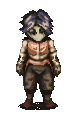
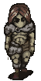
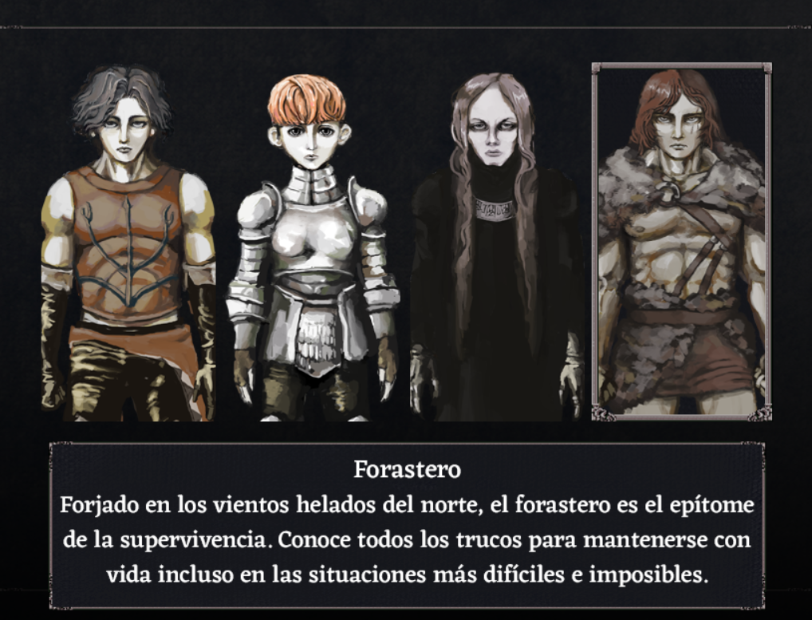

Guia De Fear And Hunger
Es una guia creada por mi y mi poca experincia en este juego, sera basica y se centrara en terminar el titulo con los finales mas faciles , este juego tiene como 6 finales o muchos mas , elegi crear la guia con el final de encontar a legard y salir de las masmorra y el otro de matar a los 3 dioses nuevos. Lo primero que hay que hacer es elegir entre las 4 opciones que te da el juego para empezar con ese personaje que vendrian a ser.
Cahara (El mercenario) 
El mercenario, es conocido por sus tácticas sucias en la batalla y sus formas astutas de obtener ventaja, haciendo lo que sea necesario para traer plata a la mesa.Cahara es un personaje versátil que tiene la posibilidad de aprender las habilidades Lockpick, Steal, Escape Plan y Dash, también pueden usar cualquier tipo de armadura y equipar cualquier arma. Las habilidades con las que comienza el Mercenario varían dependiendo de las elecciones que haga el jugador durante su presentación.
D'arce (El caballero) 
Un caballero el cual ha sido entrenada en combate desde la infancia y se destaca en el combate cuerpo a cuerpo con diferentes armas.D'arce es el personaje que inicia con mas objetos al llegar a la mazmorra pues dependiendo de las opciones que escojamos llegara con una set completo de armadura, una espada o lanza con un daño considerable. Si el jugador opta por escoger a D'arce como protagonista, puede aprender barrido de piernas y contraataque a lo largo de la partida, El caballero puede comenzar con diferentes equipos según la opción que elija el jugador durante la introducción,D'arce está en el pueblo Cavedweller posterior al nivel de las minas; al visitar el área, el jugador puede encontrarla siendo atacada por uno de los lugareños y tendremos la oportunidad de salvarla matando a su agresor, volviendo hostiles a los otros Cavedwellers después. La escena se activa aleatoriamente al ingresar al mapa. D'arce será asesinado por Cavedweller si el jugador no la ayuda. Si se salva, D'arce se unirá al jugador si se le ofrece la oportunidad; ella le pedirá al grupo que la ayude a encontrar a Le'garde y llorará de alegría si se reencuentra con él. Si el jugador no permite que se una al grupo o no hay lugar para ella, D'arce se quedará en el lugar hasta que pueda ser reclutada.
Enki (el sacerdote oscuro)
Enki es el mejor personaje jugable cuando se trata de magia, ya que tiene múltiples opciones relacionadas con habilidades mágicas en su introducción y tiene acceso al árbol de habilidades de Iluminación en la Mesa Hexen. Si bien su dominio de la magia puede ser muy útil, su cuerpo débil y su incapacidad para usar ciertas armas y armaduras pueden hacer que sea bastante difícil acostumbrarse a él, lo que lo convierte en una mala elección para los principiantes. Las habilidades con las que comienza Enki varían dependiendo de las elecciones que haga el jugador durante su presentación y tiendo un comienzo relativamente bueno siempre y cuando se escojan las opciones adecuadas:- Encuéntralo leyendo en la biblioteca y procede a hablar un poco con él (énfasis en "poco", Enki se enojará si el jugador continúa hablando). En concreto, habla con él hasta que el juego diga el mensaje "it'd be best not to bother him anymore" o si no quiere arriesgarte solo pregunta cual es su nombre
Ragnvaldr (el forastero) 
Ragnavaldr es personaje con mayor daño inicial cuando se habla de los 4 protagonistas, comenzando con unos sólidos 40 puntos de daño inicial en lugar de los 30 habituales.de igual forma las habilidades que puede tener Ragnvaldr van a variar dependiendo de las elecciones que tomemos antes de llegar a la mazmorra Ragnvaldr se puede encontrar por primera vez en el patio oculto (al cual se puede entrar si se coloca el "mockup book" en una estantería situada en la misma habitación donde encontramos a Enki) cuando se "enfrenta" al jugador, confundiéndole con un malvado habitante de la mazmorra, es necesario acabar todas las opciones de dialogo para poder reclutarlo.posteriormente se le puede encontrar por segunda vez en el quinto nivel del matorral. Dice que el Dios de las profundidades está cerca de este lugar y enseña sobre ellos. Puede ser reclutado en este punto si se habla con él y se agota sus opciones de diálogo.
Mejor opcion es enki por su hablidad nigromancia que puedes reculutar rapidamente tanto ghouls como esquletos, y darce tiene mas daño y corta mejor extremidades, lo siguiente es agarrar rapidamente todos los objetos que puedas de los barriles y meterte en las masmorras antes de que aparescan los perros intentar esquivar a todos los enemigos y no tardar mas de 30 minutos en llegar hasta legard, activar la palanca de las carceles y meterte a las profundidades, podras reclutar a darce muy facil en el camino , y luego llegar hasta el nivel 7 esquivar al enemigo cuadrupedo y tambien al guardian elite , depues tentrar en la carcel de legard y llevartelo , hay unas escaleras que te llevan rapido a la superfice , y luego vuelves a donde empezaste y te vas, final 1 consguido .
Guia Mejor Explicada, no es mia.